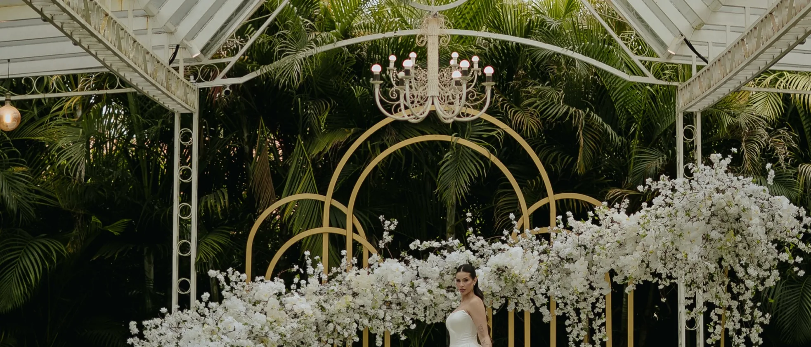
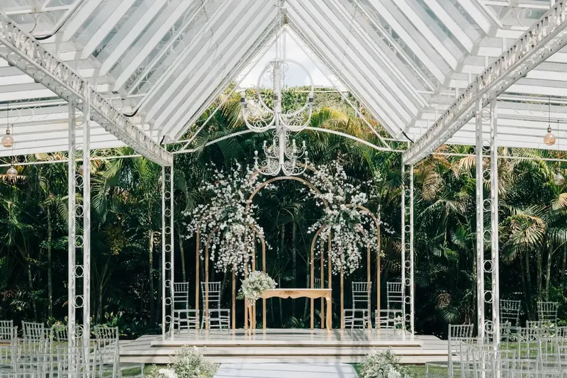
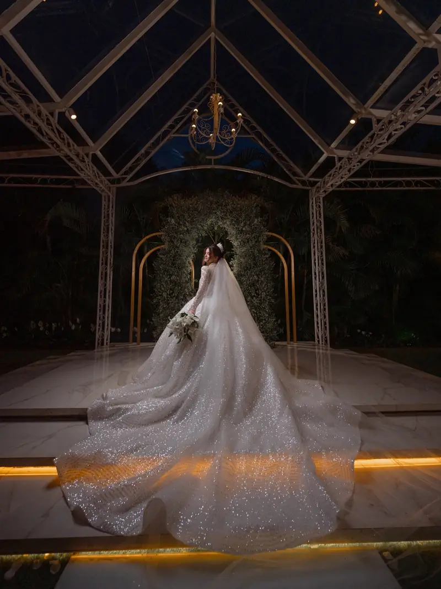
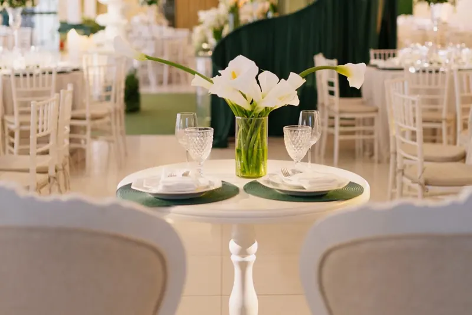
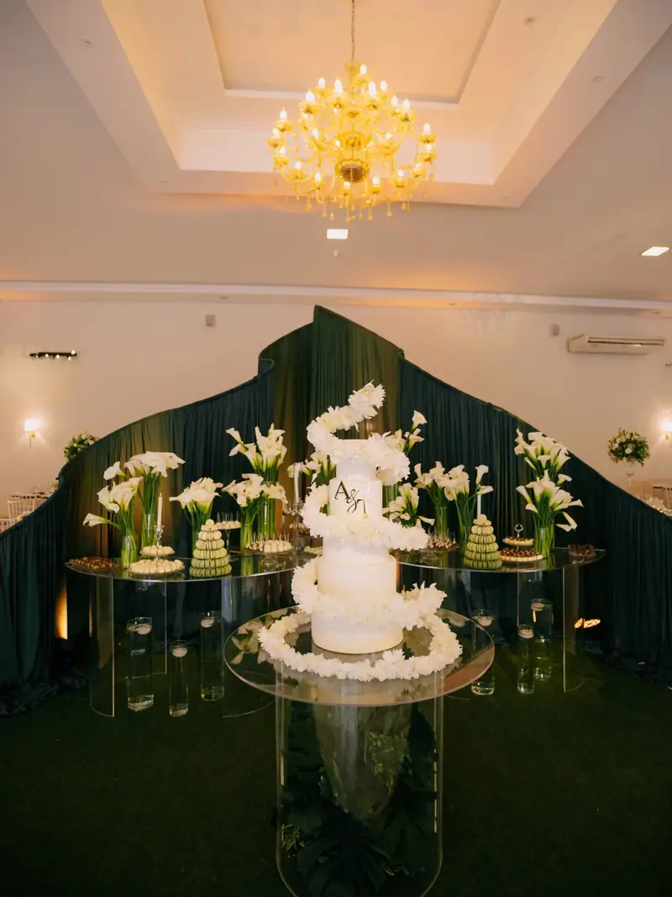
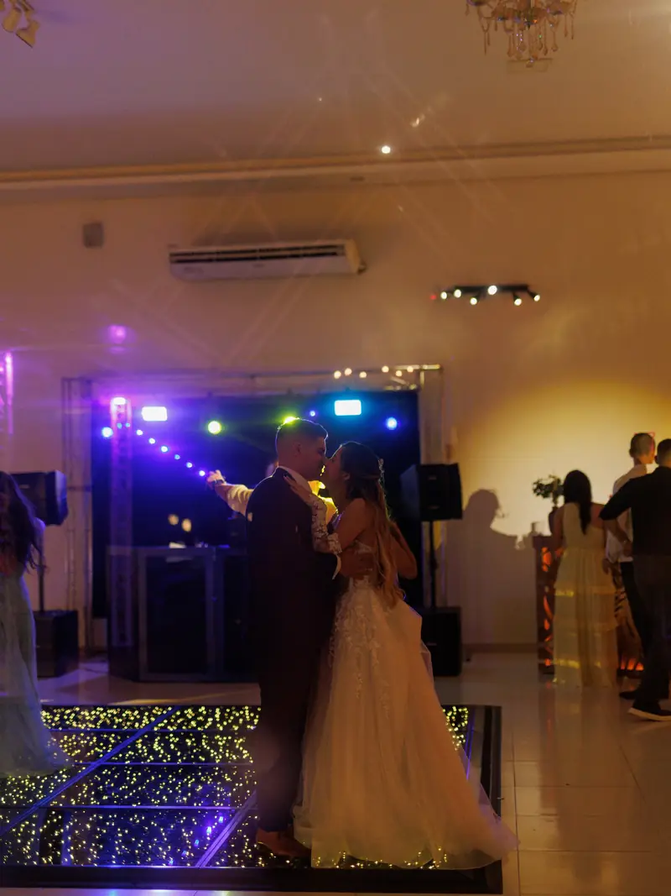
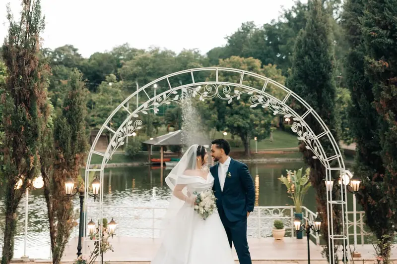
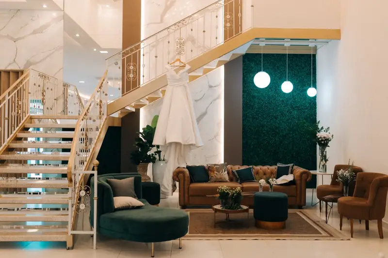
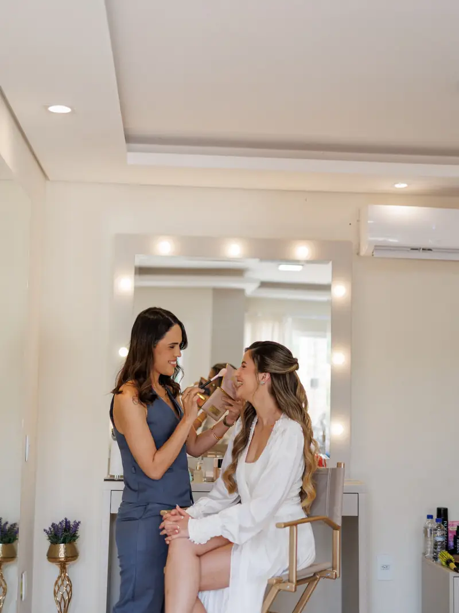

Conheça o Château.
Tenda Monreale, salão principal, lago com fonte, jardins, lounge, suíte da noiva e uma tirolesa: tudo no mesmo endereço, em Elias Fausto, a cerca de uma hora de São Paulo.

Tenda Monreale
A cerimônia sob o vidro.
A Tenda Monreale é o coração das cerimônias do Château. A estrutura de vidro e ferro branco, com arcos dourados e lustres de cristal, deixa a luz natural entrar durante o dia e ganha um brilho acolhedor à noite. Ao redor, um jardim tropical emoldura o altar. Como é coberta, a cerimônia acontece protegida, faça chuva ou faça sol.
Fotografia: Antonio Marcelino Fotógrafo · Fábio Maschietto Fotografia



Salão principal
Onde a festa acontece.
O salão principal recebe a recepção e a festa. Pé-direito alto, iluminação pensada para cada momento e lustres de cristal criam um ambiente que vai do jantar elegante à pista animada. Os tons neutros permitem composições do clássico ao contemporâneo, e a pista de LED garante a energia até a última música.
Fotografia: Primeira Cena Fotografia · This Love Fotografia



Lago e jardins
O cenário das fotos mais bonitas.
O lago com fonte é um dos cenários mais fotografados do Château. Deck, quiosque iluminado, arcos floridos e caminhos entre palmeiras e ciprestes criam paisagens diferentes a cada hora: luz dourada no fim da tarde e reflexos das luzes na água à noite.
Fotografia: Acervo Château de Lumière · Fábio Maschietto Fotografia · This Love Fotografia



Lounge e suíte da noiva
Um espaço só seu.
Antes da cerimônia, a noiva tem um espaço só dela: uma suíte com camarim e espelho iluminado, e uma cama de cabeceira dourada para receber a família. No lounge, a escadaria de corrimão dourado e os sofás de veludo compõem o cenário das grandes entradas, de noivas e de debutantes.
Fotografia: Acervo Château de Lumière · Primeira Cena Fotografia · This Love Fotografia


A tirolesa
E, sim, uma tirolesa.
Um dos diferenciais do Château: uma tirolesa dentro do espaço, para quem quer viver o dia de um jeito que ninguém esquece. Consulte a equipe sobre como incluí-la na sua celebração.
Comodidades
Pensado para os seus convidados.
- EstacionamentoAmplo, para os convidados.
- AcessibilidadeEntrada, banheiro e estacionamento para cadeira de rodas.
- PreparaçãoSuíte da noiva com camarim.
- CerimôniaCoberta, na Tenda Monreale.
- PaisagemLago com fonte, deck e quiosque.
- FestaPista de LED no salão principal.
N° 02
Sobre
Sobre o Château de Lumière
O Château de Lumière Espaço & Eventos é um espaço para casamentos, festas de quinze anos e eventos corporativos em Elias Fausto, SP, a cerca de uma hora de São Paulo e perto de Campinas, Indaiatuba, Itu e Salto. Reúne a Tenda Monreale, estrutura de vidro coberta para cerimônias, salão principal com pista de LED, lago com fonte, jardins, lounge com escadaria dourada, suíte da noiva e tirolesa. Tem nota 4,9 no Google, com 309 avaliações.
N° 03 — Agende sua visita
Venha ver de perto.
Agende uma visita e conheça a Tenda Monreale, o salão, o lago, a suíte da noiva e a tirolesa. Respondemos pelo WhatsApp.
- WhatsApp(19) 99411-2741
- Telefone(19) 99411-2741
- EndereçoElias Fausto, SP
- Agenda2027 · 2028 · 2029